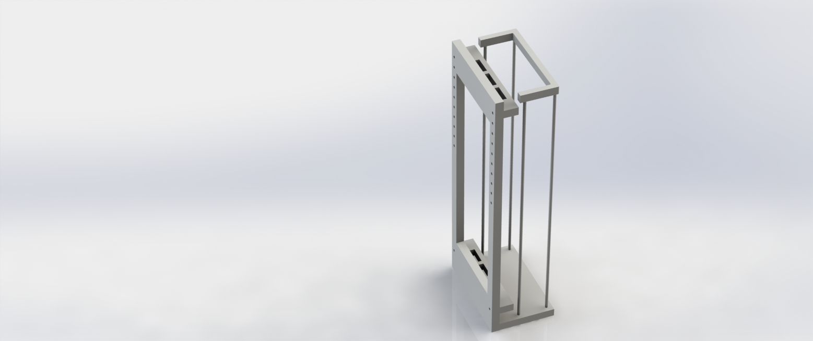

Blog
Read more about our personal journeys here.
Advancing the Mechanical System
By Charlie Mouton
30 October 2015 12:28 PM
During Sprint 1, we were able to create a mechanical system that would serve as our testing platform for our first few sprints. We quickly cut some plywood on the shopbot CNC router we have access to. Of course, as with any first prototype, we ran into some issues at assembly, specifically if the areas of servo mounting and wire management.
I did not account for the mounting tabs on each servo, and the servo mounted in the middle did not fit, and eventually was mounted with its tabs sitting above the other two. Also, once we mounted our two inch wide ribbons, we noticed that due to the servos close proximity to the front plate, the ribbons were not free to rotate 180 degrees without interference. We solved this problem temporarily using delrin spacers.
I put little thought in wire management, causing the wires running from our arduino to the top servos to look unsightly, and leading to several instances of them getting unplugged from our breadboard due to their mounting system. There is also no home for the arduino and breadboard, and they are just resting at the bottom, causing some interference with the servos mounted at the bottom of our system.
To solve these problems for Proto2, I implemented some holes in our arduino mounting plates for wires to go through. I also left more space on each side of our front plate for the wire to traverse down to the electronics sitting on the base. I also improved the servo mounting plate by rotating the angle that the servo is mounted by ninety degrees, eradicating any interference that might occur between their mounting tabs. This also allowed for us to create better spacing between servo horn and the front plate.
Another major change for Proto2 is the addition of two more ribbons. By having potentially 5 ribbons mounted, we can better visualize the patterns that we aim to see in the larger system, even if we won't be able to do that this sprint. By planning ahead in this sense, we ensure that our computing team has a well-suited testing platform for them to continue to work on their interactions with their servos as well as their pattern algorithms.